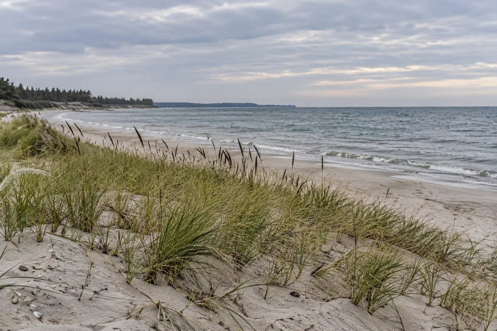

Кафедральный собор
Собор на острове Канта удобно включить в прогулку между городскими набережными. Внешний осмотр и посещение органного зала — разные части поездки. Следующая остановка — ««Планета Океан»»: ≈769 м по карте.
Свет на сайте
Сегодня · Калининград
В режиме «Авто» свет меняется вместе с солнцем.
Начало астрономической ночи для этих суток не рассчитано.
Спланировать вечерБраузер не сохранил выбор. На этой странице режим работает.
Балтийский
характер
рядом
Сценарии поездки · 82 места
Собор у реки, сосновая тропа, городской променад — у каждой остановки свой масштаб. Найдите места для поездки и посмотрите, что можно соединить в одну прогулку.
82 места
Места из подборки. Чтобы составить путь, учитывайте время на дорогу и остановки.
Собор на острове Канта удобно включить в прогулку между городскими набережными. Внешний осмотр и посещение органного зала — разные части поездки. Следующая остановка — ««Планета Океан»»: ≈769 м по карте.
Мемориальное место у стен Кафедрального собора. Его можно посмотреть в одной остановке с собором, не закладывая отдельный переезд. Следующая остановка — ««Планета Океан»»: ≈870 м по карте.
Остров между рукавами Преголи объединяет собор и зелёные прогулочные пространства. Это связующая остановка между Рыбной деревней и набережной музея. Следующая остановка — ««Планета Океан»»: ≈703 м по карте.
Городской квартал у Преголи, который удобно смотреть с набережной. Здесь прогулка может продолжиться к Медовому мосту и острову Канта. Следующая остановка — ««Планета Океан»»: ≈1322 м по карте.
Вертикальный ориентир Рыбной деревни рядом с набережной. Подъём на смотровую и прогулка у здания требуют разного времени. Следующая остановка — ««Планета Океан»»: ≈1035 м по карте.
Мост связывает остров Канта с районом Рыбной деревни. Он полезен как переход между остановками, а не как повод для отдельного переезда. Следующая остановка — ««Планета Океан»»: ≈902 м по карте.
Музейное судно на набережной Мирового океана. Включайте его в прогулку вдоль реки, а внутреннюю экспозицию планируйте как отдельное посещение. Следующая остановка — «Остров Канта»: ≈834 м по карте.
Экспозиционный корпус на музейной набережной. Рядом расположены другие корпуса и суда, поэтому здесь легко продлить городской маршрут. Следующая остановка — «Остров Канта»: ≈871 м по карте.
В одной связке
Корпус Музея Мирового океана у Преголи. Его можно выбрать основной музейной остановкой дня и оставить набережную для прогулки до или после входа. Следующая остановка — «Кафедральный собор»: ≈769 м по карте.
В одной связке
Музейное судно у набережной Мирового океана. Хорошая точка для знакомства с устройством маяка в контексте прогулки по речному берегу. Следующая остановка — «Кафедральный собор»: ≈705 м по карте.
В одной связке
Ворота у южного берега Преголи, в стороне от острова Канта. При включении в маршрут учитывайте переход через реку и подход по городским улицам. Следующая остановка — «Судно «Космонавт Виктор Пацаев»»: ≈1960 м по карте.
В одной связке
Исторические ворота в южной части города. Их удобно рассматривать в маршруте по южному берегу, а не добавлять без расчёта дороги к северным воротам. Следующая остановка — «Судно «Космонавт Виктор Пацаев»»: ≈2268 м по карте.
В одной связке
Исторические ворота на восточной стороне центральной части Калининграда. До острова Канта отсюда требуется самостоятельный городской переход. Следующая остановка — «Плавучий маяк «Ирбенский»»: ≈3144 м по карте.
Ворота в восточной части города. Подходят для сочетания с Королевскими воротами и дальнейшей прогулкой к Преголе. Следующая остановка — «Плавучий маяк «Ирбенский»»: ≈2766 м по карте.
Музей в историческом оборонительном сооружении у Верхнего озера. В одном районе можно соединить архитектуру, выставку и прогулку у воды. Следующая остановка — «Королевские ворота»: ≈1380 м по карте.
Архитектурная остановка рядом с Музеем янтаря. Эти два объекта можно смотреть последовательно без переезда между ними. Следующая остановка — «Плавучий маяк «Ирбенский»»: ≈2662 м по карте.
В одной связке
Кирха находится в южной части города и связана с органной музыкой. Это отдельный район относительно Амалиенау. Следующая остановка — ««Планета Океан»»: ≈1836 м по карте.
Кирха у Центрального парка — удобный ориентир прогулки по Амалиенау. Внешний осмотр можно совместить с парком и соседними улицами. Следующая остановка — «Пакгауз · Музей Мирового океана»: ≈2594 м по карте.
В одной связке
Зелёная остановка рядом с кирхой памяти королевы Луизы. Здесь городской маршрут можно сделать спокойнее, оставив время на прогулку по аллеям. Следующая остановка — «Пакгауз · Музей Мирового океана»: ≈2370 м по карте.
В одной связке
Один из архитектурных ориентиров Амалиенау. В маршруте по виллам интерес представляет внешний облик здания и улица вокруг него. Следующая остановка — «Пакгауз · Музей Мирового океана»: ≈2812 м по карте.
В одной связке
Архитектурная остановка в районе Амалиенау, рядом с другими историческими виллами. Подходит для неспешного знакомства с кварталом пешком. Следующая остановка — «Пакгауз · Музей Мирового океана»: ≈2866 м по карте.
В одной связке
Музейная остановка в районе исторической городской застройки. Её можно добавить к архитектурной прогулке, если время посещения согласовано заранее. Следующая остановка — «Пергола королевы Луизы»: ≈426 м по карте.
В одной связке
Большая территория для самостоятельного посещения в городе. Лучше выделить ей отдельную часть дня, чем считать короткой остановкой между музеями. Следующая остановка — «Пакгауз · Музей Мирового океана»: ≈2547 м по карте.
В одной связке
Небольшая архитектурная остановка в Центральном парке. Её удобно посмотреть после кирхи, оставаясь в зелёной части прогулки. Следующая остановка — «Пакгауз · Музей Мирового океана»: ≈2544 м по карте.
В одной связке
Променад идёт вдоль моря примерно на 2,5 км. Верхний уровень подходит для прогулки, бега и велосипеда; ниже расположен песчаный пляж. На бывшем причале теперь смотровая площадка. Следующая остановка — «Дольче Нонна» (Улица Пугачёва, 8А): ≈219 м по карте.
Курортный проспект — пешеходная историческая улица с курортными зданиями и небольшими остановками. Её удобно пройти пешком по пути от центра к морю. После прогулки по Курортному проспекту можно заглянуть в краеведческий музей Зеленоградска. Переход — ≈352 м по карте.
В одной связке
Башня высотой почти 40 м построена в 1905 году. На высоте 24 м, в зоне бывшего водяного бака, устроена круговая смотровая площадка: отсюда видны море, красные крыши курорта и храм на Московской улице. При реконструкции в 2006–2012 годах сохраняли исторический вход, боковые русты, ковку и остатки лепного декора; старую кирпичную кладку защищали. После Мурариума можно заглянуть в «Уксус» на Саратовской, 2А. Переход — ≈67 м по карте.
В одной связке
На Ленина, 6 находится вилла семьи нотариуса Макса Крелла. В её облике сочетаются черты русского терема и готики; крыша покрыта глазурованной черепицей. Парадный вход служил клиентам конторы, дворовый — семье. Сейчас в здании работает краеведческий музей. Следующая остановка — «Телеграф» (Курортный проспект, 29): ≈213 м по карте.
В одной связке
В центре «Парадокс» на Саратовской, 2А работает музей о символике черепа и скелета в культуре. Его удобно совместить с «Мурариумом»: оба музея указаны по адресу Саратовская, 2А. Следующая остановка — «Кирха Святого Адальберта»: ≈250 м по карте.
В одной связке
На Московской, 40А стоит бывшая лютеранская кирха Святого Адальберта: краснокирпичное здание с готической башней высотой 42 м, освящённое в 1897 году. Кофейня «Слоу» находится по соседнему адресу — Московская, 40В. В прежней кирхе был орган работы М. Терлецки. После Второй мировой войны здание использовалось как городской спортзал. После осмотра кирхи на Московской, 40А можно заглянуть в кофейню «Слоу» на Московской, 40В. Переход — ≈94 м по карте.
Курортный, 16 — адрес исторического Курхауса, гостиницы, вокруг которой складывалась курортная жизнь Кранца. Сегодня здесь работает отель; на первом этаже находятся ресторан «БАЛТ» и пекарня «Хлеб». После Курхауса можно заглянуть в «БАЛТ» на Курортном проспекте, 16. Переход — ≈58 м по карте.
В одной связке
Небольшой круглый павильон с четырьмя кранами стоит у променада и аллеи Дружбы, недалеко от пирса. Это короткая остановка по пути вдоль моря. Следующая остановка — «Дольче Нонна» (Улица Пугачёва, 8А): ≈183 м по карте.
В сквере королевы Луизы растёт вяз, посаженный королём Пруссии Вильгельмом IV в память о матери. Бронзовый бюст Луизы подарили городу в 2007 году. Следующая остановка — «Краеведческий музей Зеленоградска»: ≈270 м по карте.
В одной связке
Кошачий светофор — небольшая городская деталь кошачьей темы Зеленоградска. Его можно заметить во время прогулки по центральным улицам. Следующая остановка — «БАЛТ» (Курортный проспект, 16): ≈128 м по карте.
В одной связке
Лесная остановка на Куршской косе с выделенными пешеходными дорожками. Это самостоятельная прогулка, до высоты Эфа требуется переезд.
Начало пешеходной прогулки к смотровым высоты Эфа. Планируйте время на подъём и возвращение к исходной точке.
Смотровая точка в конце подъёма по маршруту высоты Эфа. До неё нужно пройти от начала тропы, затем вернуться по разрешённому пути.
Смотровая на отдельном пешеходном маршруте Куршской косы. Её нельзя считать соседней остановкой озера Лебедь без расчёта переезда.
Станция кольцевания птиц на Куршской косе. Посещение зависит от работы станции и организации экскурсий.
Лесной туристский маршрут в южной части косы. Подходит для самостоятельной остановки до дальнейшего движения к северным тропам.
Морской берег рядом с посёлком Лесной. Выход к пляжу можно сочетать с остановкой в посёлке, не превращая его в переход по всей косе.
Ориентир морской стороны посёлка Лесной. Удобно рассматривать вместе с береговой прогулкой рядом с посёлком.
Прогулочная линия у моря ниже городской части Светлогорска. При планировании учитывайте спуск и возвращение наверх. Следующая остановка — «Вокзал Светлогорск-2»: ≈710 м по карте.
В одной связке
Архитектурный ориентир в верхней части Светлогорска. Его удобно смотреть до спуска на морской променад. Следующая остановка — «Морской выставочный центр» (ул. Ленина, 11, «Янтарь-холл»): ≈519 м по карте.
Озеро в городской части Светлогорска, в стороне от морского берега. Для спокойного дня можно выбрать прогулку у воды без спуска к морю. Следующая остановка — «Вокзал Светлогорск-2»: ≈1419 м по карте.
Городская деталь у морской прогулочной части Светлогорска. Удобна как остановка по пути вдоль променада. Следующая остановка — «Вокзал Светлогорск-2»: ≈697 м по карте.
В одной связке
Морской ориентир Балтийска рядом с каналом. Его можно смотреть с городской стороны, отдельно от поездки на Балтийскую косу. Следующая остановка — «Вокзал Балтийск»: ≈985 м по карте.
Музейная остановка в Балтийске. При поездке из Калининграда выделите время на городскую часть и возвращение. Следующая остановка — «Вокзал Балтийск»: ≈696 м по карте.
Морской берег у центральной части Янтарного. Для спокойного дня его можно сочетать с променадом, оставив время на дорогу из других городов.
Береговая прогулочная часть Янтарного. Удобна для соединения городского подхода с выходом к пляжу.
Курортный проспект, 29 — здание бывшей почты и телеграфа, где также была квартира почтмейстера. В меню — строганина из пеламиды, балтийская уха, цеппелины и клопсы. Фото входа снято 30 мая 2026 года. Следующая остановка — «Сквер королевы Луизы»: ≈101 м по карте.
В одной связке
Курортный проспект, 16. В меню — куршские лепёшки с балтийскими травами, рыба, мясо и дичь. Следующая остановка — «Курортный проспект»: ≈86 м по карте.
В одной связке
Курортный проспект, 3. В меню — яичницы, пироги и блины; подборка 2ГИС датирована декабрём 2025 года. Следующая остановка — «Музей «Мурариум»»: ≈315 м по карте.
В одной связке
Улица Гагарина, 2Г, у променада. На фотографии — вход со стороны набережной; меню опубликовано отдельными файлами. Следующая остановка — «Сквер королевы Луизы»: ≈522 м по карте.
В одной связке
Улица Гагарина, 62, западный пляж. В меню — скумбрия, судак и уха; рядом деревянный настил. Следующая остановка — «Краеведческий музей Зеленоградска»: ≈2163 м по карте.
В одной связке
Улица Пугачёва, 8А. На фотографии у входа видна доска меню; в подборке — пицца и паста. Следующая остановка — «Бювет королевы Луизы»: ≈183 м по карте.
Московская, 40В. На фотографии видны кирпичный фасад и столики во дворе; в меню — кофе, чай, круассаны и печенье. Следующая остановка — «Музей черепов и скелетов»: ≈344 м по карте.
В одной связке
Улица Гагарина, 12А. Ресторан при отеле; сайт указывает сезонную работу. Проверьте часы на дату поездки.
Курортный проспект, 16. На фасаде — вывеска пекарни; в меню 2ГИС есть хлеб и завтраки. Расписание разделено на сезон и межсезонье без точных дат перехода. Следующая остановка — «Курортный проспект»: ≈86 м по карте.
В одной связке
Курортный проспект, 10. 3 октября 2026 года Яндекс Карты отмечали кафе как закрытое. Фотографии от 30 мая 2026 года сохранены как архив места.
Курортный проспект, 6. На фотографии у входа виден нарисованный кот; в меню — уха, рыбная котлета, клопсы, завтраки и пицца. Следующая остановка — «Променад Зеленоградска»: ≈326 м по карте.
В одной связке
Пограничная, 1. В меню у входа — тунец, гребешок и копчёный угорь; актуальное меню опубликовано на сайте ресторана. Следующая остановка — «Музей «Мурариум»»: ≈332 м по карте.
В одной связке
Крымская, 5. В официальном QR-меню — рыба на гриле, шашлык, пицца и бургеры. Следующая остановка — «Бювет королевы Луизы»: ≈202 м по карте.
В одной связке
Улица Пугачёва, 4А. На вывеске — «Рыбное кафе на пирсе», на сайте — «Бранч на море». Завтраки до 12:00, рыба и основные блюда с 11:00. Следующая остановка — «Курхаус Кранц»: ≈237 м по карте.
Улица Володарского, 12А. В доступном меню — скумбрия горячего копчения, похлёбка на пиве и мясные блюда; источник содержит 10 позиций. Следующая остановка — «Курхаус Кранц»: ≈444 м по карте.
Улица Володарского, 20. Ресторан при отеле; на фотографии видна башенка. Меню опубликовано на сайте отеля. Следующая остановка — «Кирха Святого Адальберта»: ≈570 м по карте.
В одной связке
Московская, 66. В официальном каталоге доставки — суши, роллы, онигири и горячие блюда; цены для зала отдельно не подтверждены. Следующая остановка — «Променад Зеленоградска»: ≈1068 м по карте.
В одной связке
Московская, 66. В архиве есть фото вывески, но нет меню; часы и формат работы уточните перед визитом. Следующая остановка — «Променад Зеленоградска»: ≈1018 м по карте.
В одной связке
Саратовская, 2А, центр «ПАРАDOX». На вывеске указаны ранние завтраки; в меню — завтраки, паста и бургеры. Следующая остановка — «Музей «Мурариум»»: ≈67 м по карте.
В одной связке
Курортный проспект, 7. В меню — литовские цеппелины и холодный борщ; в отзывах упоминают самообслуживание. Следующая остановка — «Курортный проспект»: ≈218 м по карте.
В одной связке
Центральный вокзал Зеленоградска. Отсюда удобно начать прогулку по курортным улицам и выйти к морю. Зеленоградск-2 — другая остановка, западнее центра. Следующая остановка — «Сквер королевы Луизы»: ≈290 м по карте.
В одной связке
Остановка на западной стороне Зеленоградска. Летом сюда приходит «Морской экспресс», а широкий морской берег остаётся совсем рядом: ТИЦ указывает около 600 метров от платформы. От станции Зеленоградск-2 можно пройти к западному пляжу. Переход — ≈588 м по карте.
В одной связке
За западными кварталами город раскрывается широким песчаным берегом. Здесь можно остаться у воды, а потом вернуться к электричке тем же путём. После пляжа у Зеленоградска-2 можно заглянуть в «Гнездо» на улице Гагарина, 62. Переход — ≈675 м по карте.
Здесь заканчивается поезд и начинается прогулка. Вокзал Светлогорск-2 стоит на улице Ленина, рядом с курортным центром. До башни и моря можно пройти пешком. Следующая остановка — «Солнечные часы «Зодиак»»: ≈697 м по карте.
В одной связке
От станции можно пройти к музею и маяку, а затем вернуться к поезду тем же городским кварталом. Переправа на Балтийскую косу — отдельная поездка. Следующая остановка — «Балтийский маяк»: ≈985 м по карте.
На пересечении проспекта Мира и улицы Леонова стоит памятник четырём землякам-космонавтам. Начните здесь, а затем пройдите к реке — искать следы космоса среди кораблей. Следующая остановка — «Пакгауз · Музей Мирового океана»: ≈2380 м по карте.
В одной связке
Выставочный центр на набережной Петра Великого, 5. Здесь можно решить, продолжить ли прогулку у воды или зайти на выставку; в кассе продают билеты на судно «Космонавт Виктор Пацаев». Следующая остановка — «Остров Канта»: ≈988 м по карте.
В одной связке
Корабль у музейной набережной связывал Землю с космосом. Рассмотрите его с берега: здесь космическая история оказывается совсем близко к воде. Следующая остановка — «Остров Канта»: ≈1005 м по карте.
В одной связке
Морской выставочный центр Музея Мирового океана занимает помещения «Янтарь-холла» на Ленина, 11. Внутри — этнографическая экспозиция «Люди моря» и сменные выставки морской художественной галереи. После осмотра можно продолжить прогулку по улице Ленина к водонапорной башне. Следующая остановка — «Променад Светлогорска»: ≈468 м по карте.
В одной связке
На 14,7-м километре косы, у залива, можно зайти в залы о природе, рыболовстве и истории полётов над дюнами. «Древняя Самбия», причал и дендрарий находятся снаружи: для дождливого дня выбирайте музейные залы.
Ресторан в отеле Madame L на улице Гагарина, 15. В меню — балтийская уха, филе судака и десерты. После обеда идите по улице Ленина к «Янтарь-холлу», затем спускайтесь к морю. Следующая остановка — «Морской выставочный центр» (ул. Ленина, 11, «Янтарь-холл»): ≈484 м по карте.
В одной связке
Театр эстрады на улице Ленина, 11 в Светлогорске. Концерты и спектакли проходят по афише площадки. Следующая остановка — «Local Baltic Food» (ул. Юрия Гагарина, 15): ≈556 м по карте.
В одной связке
Готовый путь
Пешком · Калининград · 1,6 км
У вилл Лео и Шмидт прогулка начинается с архитектуры, у кирхи памяти королевы Луизы переходит к аллеям Центрального парка. Два часа на этот путь; для «Альтес Хаус» добавьте отдельное время.
Пешком · Калининград · 2,3 км
Преголя ведёт от собора через Медовый мост и Рыбную деревню к музейной набережной. Здесь стоят «Витязь» и «Планета Океан». Три часа на прогулку; посещение музеев займёт дополнительное время.
Пешком · Калининград · 4,5 км
От Королевских и Закхаймских ворот путь выходит к Рыбной деревне, острову Канта и музейной набережной. Около 4,5 км: городская архитектура постепенно уступает место реке.
Пешком · Куршская коса · 1,1 км
Дорожки Танцующего леса ведут между соснами и возвращают к началу прогулки. Около часа с остановками; до входа на тропу нужно добраться транспортом. Высота Эфа — отдельная поездка.
Пешком · Куршская коса · 1,9 км
От входа на тропу путь поднимается к смотровой Эфа, затем возвращается по тому же разрешённому маршруту. Почти 2 км со ступенями и остановкой у дюн; дорогу до тропы рассчитайте отдельно.
Пешком · Зеленоградск · 1,2 км
Небольшой день у моря: от западной станции к широкому пляжу и обратно к поезду. В линии учтены оба пеших подхода, в остановках — полчаса у воды.
Пешком · Светлогорск · 4,8 км
От Светлогорска-2 к Тихому озеру и башне. Рыбный обед в Local, «Янтарь-холл» и променад — с возвращением к поезду и персональным PDF.
Пешком · Балтийск · 2,0 км
Короткая прогулка по Балтийску: от вокзала к Музею Балтийского флота и маяку у канала, затем обратно к станции. Переправа на косу и время внутри музея в этот путь не входят.
Пешком · Калининград · 2,4 км
От памятника землякам-космонавтам — к судну «Космонавт Виктор Пацаев». Городская прогулка заканчивается у воды. Музей и экскурсию на борт можно добавить отдельно.
Пешком · Зеленоградск · 3,9 км
От вокзала к кирхе и кофе, затем коты, Курортный проспект, рыбный обед и море. Один пеший день с картой, обратным поездом и персональным PDF.
Пешком · Светлогорск · 1,8 км
От вокзала через курортный город к морю. Башня и променад связаны пешим путём с возвращением на поезд.

Обновлено 4 октября 2026 года.